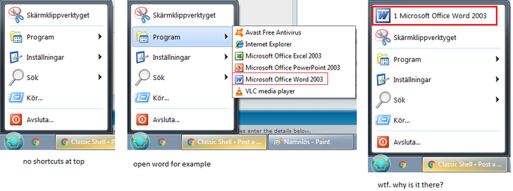
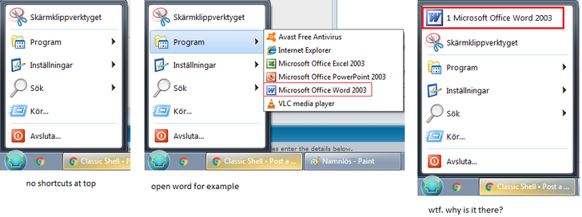

how do i delete the area in green?

| Classic Shell http://www.classicshell.net/forum/ |
|
| how do i delete this area? PICTURE http://www.classicshell.net/forum/viewtopic.php?f=7&t=7846 |
Page 1 of 1 |
| Author: | ninasky [ Wed Aug 23, 2017 7:23 am ] |
| Post subject: | how do i delete this area? PICTURE |
how do i delete the area in green?
|
|
| Author: | Ivo [ Wed Aug 23, 2017 7:58 am ] |
| Post subject: | Re: how do i delete this area? PICTURE |
Uncheck the "Caption" setting in the skin settings tab. |
|
| Author: | ninasky [ Wed Aug 23, 2017 8:23 am ] |
| Post subject: | Re: how do i delete this area? PICTURE |
thank you. 1 more question.   
|
|
| Author: | Ivo [ Wed Aug 23, 2017 8:40 am ] |
| Post subject: | Re: how do i delete this area? PICTURE |
In the Main Menu tab, set "Show recent or frequent programs" to "Don't show". |
|
| Author: | ninasky [ Wed Aug 23, 2017 8:42 am ] |
| Post subject: | Re: how do i delete this area? PICTURE |
Ivo wrote: In the Main Menu tab, set "Show recent or frequent programs" to "Don't show". youre the best. thanks. that should be by default. |
|
| Page 1 of 1 | All times are UTC - 8 hours [ DST ] |
| Powered by phpBB® Forum Software © phpBB Group https://www.phpbb.com/ |
|